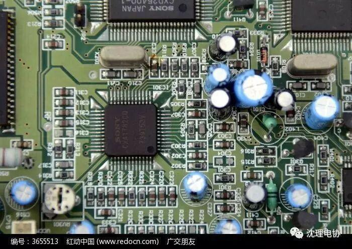
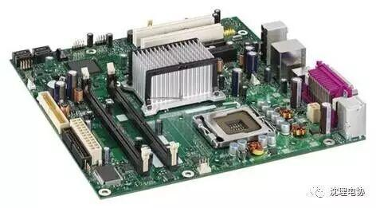

第一次重要活动
第一次重要活动


久别的好友们：好久不见喽！在开学之际，终于我们沈理大电协将迎来第一次活动喽！大家是不是很期待呢？

接下来将由小编为大家简单介绍一下这次的重要活动——分选软硬件！！相信许多人都并没有明确的方向，小编为大家介绍一下以方便大家选择！
软件
软件是一个物件的灵魂，是他必不可缺的一部分。所以这方面的人才是极为重要的！作为电协人，在c语言的基础上，还需要掌握Keil C51;Proteus 8.0;STC-ISP以及其他各种高级语言。这样才可以使更多的想法得以实现。

硬件
硬件是软件得以实施的基础，是动手动脑的综合应用，它需要极其细心地态度与毅力，便能有所成就！



以上为小编的简略理解，希望对大家的选择有所帮助！大家一定要在17号晚上5点半准时来哦！会有重大事情宣布哦！会有重大的事情宣布哦！！大家不见不散！

编辑人：信息部——刘舒宇